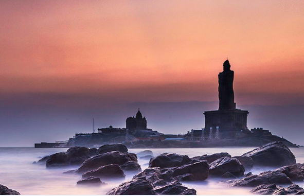

PLACES TO VISIT IN NAGERCOIL IS TO DECIDE WHAT TO LIST AND WHAT TO SKIP FROM AMONGST THE DIFFERENT LOVELY NAGERCOIL & KANYAKUMARI TOURIST PLACES.

Vivekananda Rock Memorial
In 1892, Swami Vivekananda is said to have meditated on this rocky outcrop before he started his philosophical journey. Vivekananda Rock Memorial was built in 1970. It is reached by a government-run ferry. If you thought Kanyakumari is water, water and only water, you are partly right. Partly, not wholly. The numerous places of attraction, each with a unique speciality of its own is something you may find unexpected in the place but once you start exploring it, you will be immersed in it, without even realising it yourself. The southernmost tip of the country is where Swami Vivekananda attained enlightenment and this immense, majestic memorial is in honour of the great soul who is loved and revered not only by Indians but also by the rest of the world. A single footprint can be seen on the rock inside the shrine.
Thanumalayan Temple
This temple is best described as a temple of wonders and delights. Starting with the beautiful white and pink Nandi (Shiva’s bull) made of ground shells and conches, going on to sculptures with nails glowing in transparency under sunlight, or a Ganesha in the female aspect called “Vigneshwari”, and then the musical pillars and the Navagraha fixed on the ceiling. Propitiate the huge Hanuman here (approx 18 ft), known to be powerful and wish fulfilling.
Keeriparai Reserve Forest
Keeriparai Reserve Forest is one of the must-visit attractions of Kanyakumari. All you need is a water bottle and a comfortable pair of shoes and, of course, the excitement and the energy. With this ticked, bear a distance of 40 km from Kanyakumari and 30 km from Nagercoil to stand in the threshold of a unique world of lions, elephants and pythons, among the other species of faunas. The floras are also not-to-be-missed part as many plant varieties of this forest is said to be used in the preparation of Siddha medicine, a form of ayurvedic treatment. As the mango, jackfruit, coconut hides the sparkling streams and the smaller s hrubs bearing colourful flower, you will be tempted to join in the game and to seek out the treasures of the forest.
Vattakottai Fort
Vattakotai Fort is a perfect place for a lazy picnic — with an 18th-century circular fort, some terrific views from its top and a good beach. A popular tourist spot with the azure blue sea on one side and the majestic Western Ghats on the other makes the location of this ancient fort a treat for the eyes. The granite fort is in contrast with the beautiful well-kept green lawns and the pond of clear water in the middle, inside the fort. The combination of the colours of grey, green and blue is sure to mesmerise you for the whole day. On the north of the fort are clearly visible white windmills, offering a sight that in spite of being mundane, adds to the whole visual impact that the fort provides. So, don’t miss out any small detail. You might not realise it but those tiny things when combined with the cool sea breezes, make a visit to Vattakottai Fort one of the most amazing experiences.